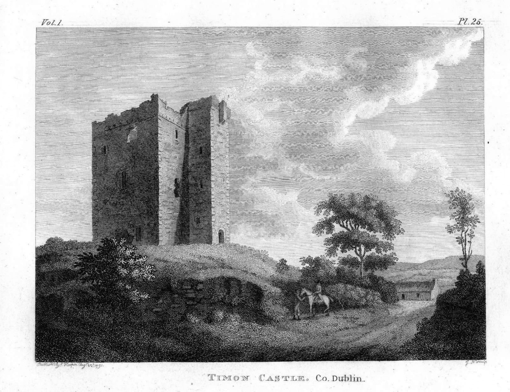
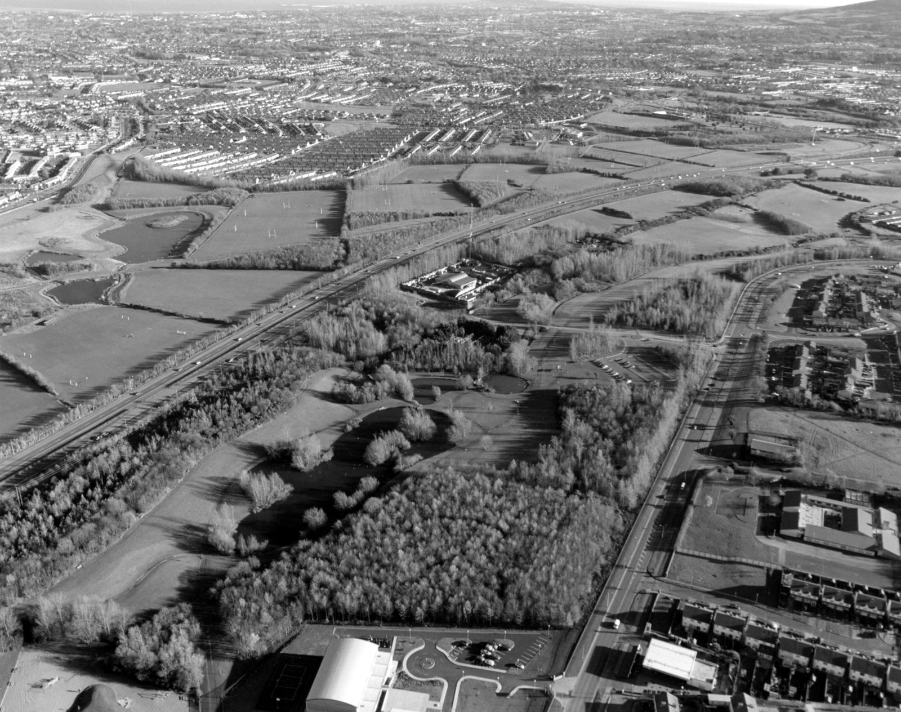
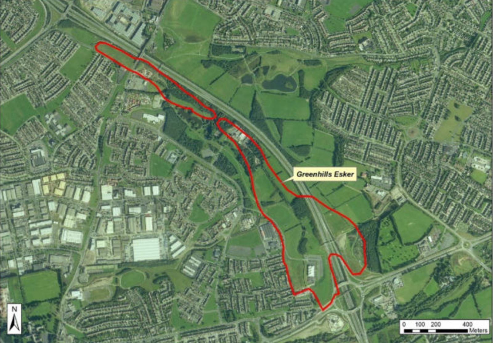

Stop 3 of 16 · Tymon Park
Tymon
A ruined castle, a glacial esker and the park built around them.
Tymon Castle
The castle is thought to have been built in either the 12th or the 15th century, as a defensive outpost against Irish clans raiding the Pale.
By 1547 it was recorded as ruinous, and it seems to have stayed that way, uninhabited for most of its life.
During the 1798 rebellion, the body of a rebel was left at the castle by his comrades after they were attacked by soldiers near Oldbawn. British soldiers then hung it from the doorway and left it there.
The Poddle flowed through the marshy ground below, with the castle on the higher ground of the esker.
Tymon estate
In 1216 King John granted the manor of Timothan to Henry de Loundres (Henry of London), Archbishop of Dublin, and his successors, said to be in recompense for his losses in fortifying Dublin Castle. Ownership later passed through many hands, including William Conolly (1662–1729), Speaker of the Irish House of Commons.
The lands later had a complex mix of owners and uses, including quarrying and farming. The state acquired them in the 1970s and opened them as a public park in 1980.
Holding back the flood
Tymon Park now does a new job for the river. Under the River Poddle Flood Alleviation Scheme, the eastern end of the lake embankment has been raised and the old weir replaced by a flow-control structure. In a big storm, the lake at Limekiln can now rise by up to three metres, holding water back until the peak has passed downstream. The impoundment came into use on 20 February 2025, the first part of the scheme to be finished.
Tymon and Greenhills Esker
Tymon Esker, along which Tymon Lane now runs, is a rare and important feature of the park. An esker is a long ridge of sand and gravel laid down by a stream flowing under a glacier, in this case during the last Ice Age, more than 10,000 years ago.
Tymon Lane, along the ridge, was an important link between Tallaght and the townlands of Dublin, and Tymon Castle was built beside it.
Watch and read


